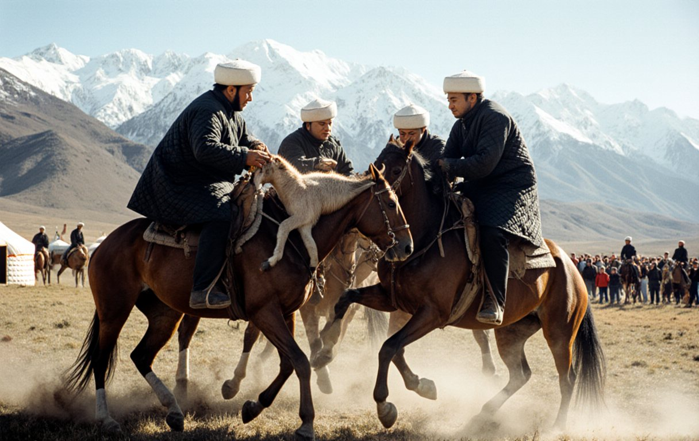

The Steppe
This is where it comes from. No beer deck, no big screen, no Wi-Fi. Clan teams on Chongtor horses on the summer pastures, elders judging from the saddle, and a goat the weight of a small child. Respect.

HIGHLAND CONFERENCE
| # | TEAM | P | W | D | L | GD | PTS |
|---|---|---|---|---|---|---|---|
| 1 | Karakoyun | 5 | 5 | 0 | 0 | +17 | 15 |
| 2 | Boztorgoy | 5 | 5 | 0 | 0 | +15 | 15 |
| 3 | Tanıp | 4 | 3 | 1 | 0 | +11 | 10 |
| 4 | Karatau Select | 4 | 3 | 0 | 1 | +6 | 9 |
| 5 | Chatkal Highlands Select | 5 | 2 | 1 | 2 | -1 | 7 |
| 6 | Akjele | 4 | 2 | 0 | 2 | -1 | 6 |
| 7 | Kökjal | 5 | 2 | 0 | 3 | -4 | 6 |
| 8 | Naiman | 4 | 1 | 1 | 2 | -2 | 4 |
| 9 | Sarybagysh | 5 | 1 | 1 | 3 | -7 | 4 |
| 10 | Chubar (Highland) | 4 | 1 | 0 | 3 | -7 | 3 |
| 11 | Aksay Plateau Select | 4 | 0 | 1 | 3 | -7 | 1 |
| 12 | Northern Steppe Select | 4 | 0 | 1 | 3 | -9 | 1 |
| 13 | Moiynkum Select | 3 | 0 | 0 | 3 | -11 | 0 |
ROUND 5
- Akjele3 – 5Boztorgoy
- Karakoyun6 – 4Kökjal
- Tanıp7 – 5Karatau Select
- Chatkal Highlands Select6 – 3Sarybagysh
- Moiynkum SelectNOT RECEIVEDNorthern Steppe Select
- NaimanNOT RECEIVEDChubar (Highland)
THE OTHER GAMES
Kyz kuu
"Chase the girl." He rides off, she chases him with a whip. If he can't outrun her, she gets to use it all the way back. Romance, steppe-style.

At chabysh
Twenty to fifty kilometres across open steppe. Form counts for less than the weather. The Directorate's autumn race from Kara-Bulak is on 25 October.
Oodarysh and tyin emmei
Mounted wrestling in an earthen ring, and picking up a coin from the ground at full gallop. Try it after four Chongtor Strongs and see what happens. (Don't.)
Salburun
The autumn eagle festival. Golden eagles, foxes, marmots and old men with more dignity than you will ever have. Judged on körktüülük: effortless grace. Not available at Club Doran.